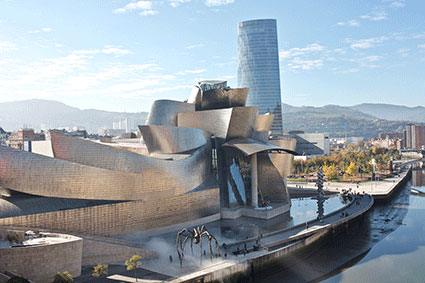

El edificio
En 1991, el Gobierno Vasco propuso a la Fundación Solomon R. Guggenheim financiar la construcción de un museo
Guggenheim en la deteriorada zona portuaria de Bilbao, una vez la principal fuente de ingresos de la ciudad.
El Museo se convirtió en parte de un master plan cuyo objetivo era renovar y modernizar la ciudad industrial.
Casi inmediatamente después de su inauguración en 1997, el Guggenheim Bilbao se convirtió en una popular
atracción turística, atrayendo turistas de todo el mundo.

El edificio visto desde el río aparenta tener la forma de un barco rindiendo homenaje a la ciudad portuaria en
la que se inscribe. Sus paneles brillantes se asemejan a las escamas de un pez recordándonos las influencias
de formas orgánicas presentes en muchos de los trabajos de Gehry. Visto desde arriba, sin embargo, el edificio
posee la forma de una flor. Para su diseño el equipo de Gehry utilizó intensamente simulaciones por ordenador
de las estructuras necesarias para mantener el edificio, consiguiendo unas formas que hubieran sido imposibles
de realizar unas pocas décadas antes.
Mientras que el museo domina las vistas de la zona desde el nivel del río, su aspecto desde el nivel superior
de la calle es mucho más modesto por lo que no desentona con su entorno de edificios más tradicionales.
Debido a su complejidad matemática, las sinuosas curvas fueron diseñadas utilizando un software de diseño en
3-D llamado CATIA; que permite complejos diseños
y cálculos que no habrían sido posible hace unos años.
Una vez en el Vestíbulo, que sirve de distribuidor, el visitante accede al Atrio, auténtico corazón del Museo
y uno de los rasgos distintivos del diseño arquitectónico de Frank Gehry. Se trata de un gran espacio diáfano
de volúmenes curvos que conectan el interior y el exterior del edificio mediante grandes muros cortina de vidrio
y un gran lucernario cenital. Los tres niveles del Museo se organizan en torno a este Atrio central y se
conectan mediante pasarelas curvilíneas, ascensores de titanio y cristal, y torres de escaleras. El Atrio, que también funciona como espacio expositivo, sirve como eje que ordena las 20 galerías que alberga el Museo, algunas de
aspecto más clásico y líneas ortogonales y otras de volumetrías más orgánicas e irregulares. El juego de
volúmenes y perspectivas permite disponer de espacios interiores en los que, sin embargo, el visitante no se
siente en absoluto desbordado.
Esta diversidad de salas ha demostrado su enorme versatilidad en las manos expertas de comisarios y
diseñadores, que han encontrado la atmósfera idónea, tanto para presentaciones de obras de gran formato y
medios contemporáneos como en muestras de carácter más sosegado o íntimo.